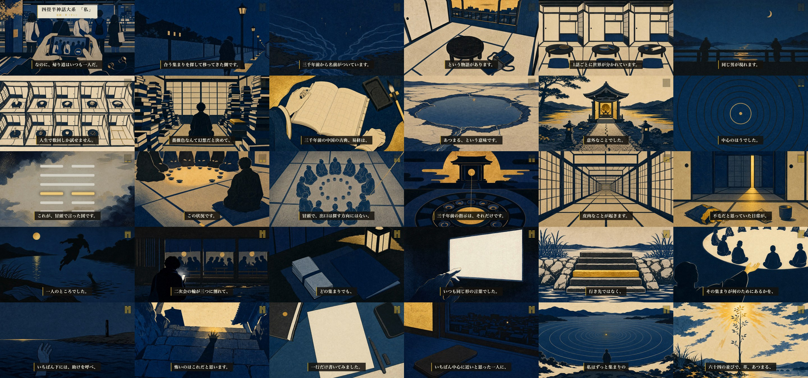

EP59 FINAL-VIDEO GATE ・ 2026-08-19（絵を7カット差し替えて再レンダした版）
第59話 通し視聴ゲート — 集まりには、ちゃんと顔を出している。なのに、帰り道はいつも一人だ。｜四畳半神話大系×萃
9分9秒・30シーン。原本: releases/079/ep59_yojouhan_sui.mp4（1080p・722MB）。下は480pプレビュー（15MB・音声同一）。公開枠 2026-09-21（月）04:00 JST。
👁 通し視聴で確認してほしい点
1. 冒頭0.5秒のコールドオープン（H67・今回が初適用＝いちばんの確認点）
再生した瞬間、六爻図が0.5秒だけ全画面で光って消えます。そこから痛みの断言へ落ちる設計です。これが「引き」になっているか、それとも面食らうだけか——ここが今回いちばん見ていただきたいところです。合わなければ cold_open を消すだけで元に戻せます（1コマンド・再レンダ4分）。
2. 幕5（6:40頃〜）の作り直しが効いているか
読者ゲートが3回続けて離脱した箇所を全面的に作り直しました。六爻を順に降ろす構造をやめて、視聴者の段＝三爻の1本に絞り、残りは語り手の失敗の告白（「呼ぶのが、負けだと思っていたからです」）と、送る前の不安への答えに溶かしてあります。着地も指示形をやめて「返事は、まだ来ていません」で閉じました。
3. いつもの点: 冒頭9秒が刺さるか／刃（5:40頃・検索窓に「社会人 サークル」と打っていた話）が自分に返るか／幕6の萃→升の一つ開け。
⚠️ 今回みつけた不具合と、その先の判断のお願い
レンダ直前のコンタクトシート目視で、六爻図が動画に映っていないことを発見しました（白画面にカットIDの文字が出るだけ）。ep59は修正して再レンダ済みで、上の動画では 3:12 頃に正しく六爻図が出ます。
問題は、同じ不具合が他の回にもあることです。機械照合の結果、該当は4話：
・content/075（ep55 黒子のバスケ×臨・9月8日公開予約済み） ← 実mp4で確認済み。「下から三番目の金色の線が、」というナレーションの裏に V_03_08 の文字が出ています
・content/056（ep36 ナウシカ×坤・公開済み）
・content/081（ep61・別セッションで制作中）
・content/079（ep59・本件で修正済み）
ep55をどうするか、ご判断ください（私はep59レーンの外なので触っていません）:
①差し替える（台本・音声・画像はそのまま、カット定義1行を直して再レンダ→動画のみ差し替え。所要15分程度）／②このまま公開／③公開を延期
🔧 再発防止（ご指示により実装済み）
essay-preflight.py timing にカット資産の実在ゲートを新設しました。Remotionのカット解決規則（card→essay-metaのcards／clip→cuts/*.mp4／still→stills/*.png）をそのまま写して、3種すべての実体を存在検査します。1つでも欠けるとFAILしてレンダへ進めません。
・ep59で正常通過（card 0 / clip 29 / still 1）、ep55・ep61で正しくFAILすることを実測で確認済み。
・既知障害34として docs/production-loop.md に、経緯と一般化した教訓を docs/pdca.md に記録しました。
なぜ今まで止まらなかったか: preflightは数値の妥当性を、fork採点と読者ゲートは台本の質を測っていて、「画面に出るはずのものが出ているか」を誰も見ていなかった。ep1-38の黒落ちバグ（2026-07-13にmixへ検査を追加）と同じ穴の別の形です。
🎨 このあと絵を7カット差し替えました（台本・音声・尺は不変）
上の不具合を直したあと、ビジュアルの独立審査（bon）と fork採点を回したところ、別案の方が高得点（95点 vs 91点）で、さらに1カットで意味の反転が見つかったので差し替えています。台本・音声・尺・構成は前回提示から一切変わっていません。
① 意味の反転（最重要）: 「無限に連なる四畳半」に画面中央を貫く金の道があり、「どこにも出口が無い閉塞」が「光の道が奥へ続く＝出口がある」に見えていました。台本と絵が逆を言っている状態です。金の道を消し、閉じた障子で終端する形へ（コンタクトシート3行目6番目）。
② 金の効かせ方（H66）: 日常場面で金が前に出すぎていた6カットを、金を一点に絞った版へ。種明かしと処方箋でだけ金が焦点になる条件づけが効くようになりました。
※ 途中、私が是正を過剰にかけて採点が 89→86 と落ちたので巻き戻しました（ep51と同じ「金を抜きすぎてCフラット化」の轍）。最終は92点でPASS。この失敗も既知障害35/36として記録済みです。
機械ゲート（全通過）
| ゲート | 結果 |
|---|
| mix preflight（尺549.1s／ピーク-4.5dB／幕間BGM-34.2dB／黒落ち29境界） | ✅ PASS |
| カット資産の実在（新設） | ✅ card 0 / clip 29 / still 1 すべて実体あり |
| 発音（whisper ASR照合） | ✅ FAIL 0・WARN 8（ASRが漢字で書き起こした表記ゆれ） |
| 字幕同期・約束オーバーレイ・語境界 | ✅ PASS（30シーン） |
| 識別監査（法務） | ✅ 全29カット「不明」・安全弁は再生成後に文字混入ゼロ |
| コンタクトシート24枚 目視 | ✅ 六爻図の表示を含め正常（下に掲載） |
| ビジュアル fork独立採点 | ✅ 92点（89→86→92。顔ゼロ・固有意匠ゼロ・文字ゼロ・「輪と中心の一点」5カットが同じ図形言語で通る） |
| 台本のfork独立採点／読者ゲート | ✅ 90点／78点（最良回・完走） |
コンタクトシート（30コマ・差し替え後に作り直し）

3行目1番目が六爻図（下から3番目が金）。1コマ目に冒頭の約束オーバーレイ、3行目6番目に是正後の無限四畳半、4行目5番目に六段の石段が見えます。
この回の映像実験
H67 コールドオープン（今回=ON・初適用）: 冒頭0.5秒の六爻図フラッシュ。ep55がOFFだったので交互適用。実装が無かったので今回作りました（既存41話に影響しないオプトイン形）。
H66 爻プログレス＋転換点の無音（継続）: 2:10頃から右上の六爻が一本ずつ金に点灯し、種明かし直前の2:10に1.5秒だけBGMが消えます。
返信のしかた
「OK」で通し視聴承認＝タイトル確定（Step8.5）→サムネ→概要欄→予約アップの素材フェーズへ進み、アップ前に一括でお見せします。
気になる点は「0:00のフラッシュが強い」「6:50の告白が長い」のように時刻つきで。ep55の扱い（①差し替え／②このまま／③延期）も併せてお願いします。
証跡: 本編=releases/079/ep59_yojouhan_sui.mp4 ／ 台本=content/079/full_script.json ／ 監査=content/079/identity_audit.json ／ 新ゲート=scripts/essay-preflight.py（カット資産の実在） ／ 既知障害34=docs/production-loop.md ／ H75=claim済(079)